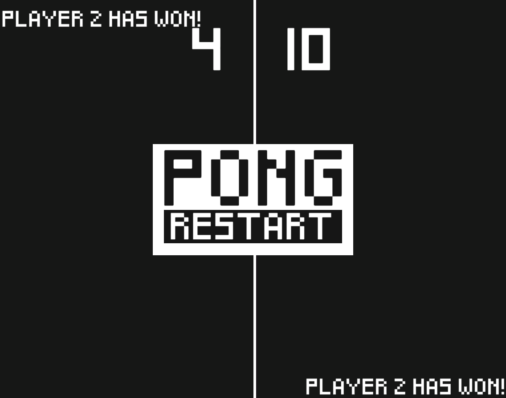
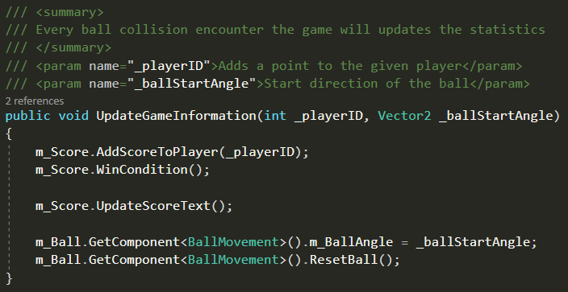
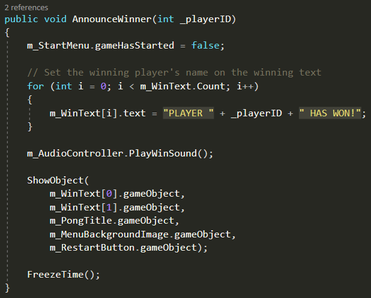

Pong
A simple, local multiplayer Pong remake.

The Project
This was the first project I made outside of school. I remember struggling with making the paddles move individually from each other, since it was a local multiplayer game. The reason I chose to remake Pong was because Pong was also the very first game ever created. So I though, my 'first' game is going to be the remake of the first game created.
What have I learnt?
I learned pretty much everything I did. I learned how to setup controls for a local multiplayer game. Other than that I've learned how to keep track of score and declare a winner if a certain amount is reached. And I also learned to implement sound effects into the game to make it more fun.
Languages & Information
- Languages: C#
- Software: Unity and Visual Studio
- Version control: GitHub
Screenshots and Videos


